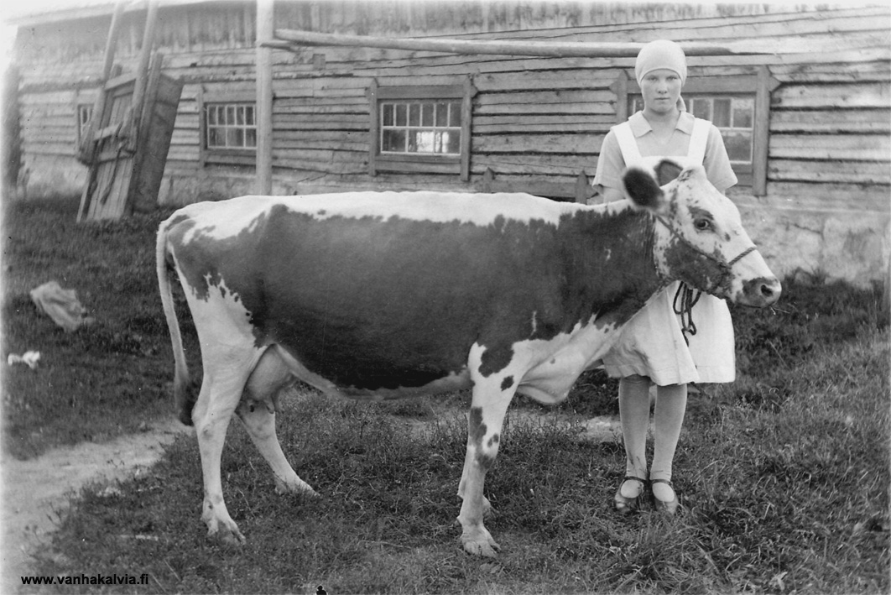
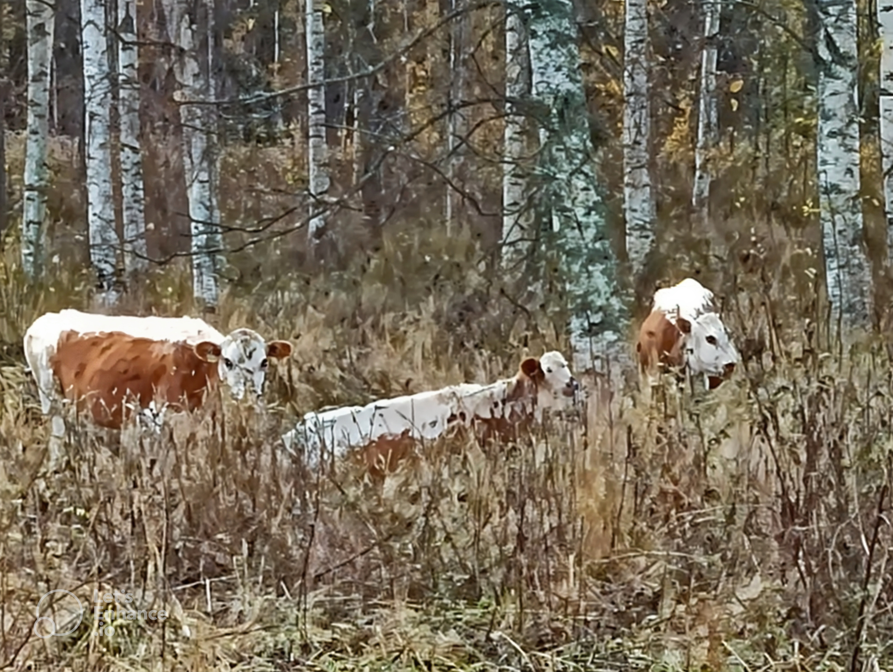

Kyyttö – Suomen alkuperäiskarjaa
Kyyttö, eli itäsuomenkarja, on osa suomalaista maaseudun historiaa – se on rotu, jonka juuret ulottuvat syvälle kansamme menneisyyteen. Jo vuosisatojen ajan kyyttö on elänyt pohjoisen ankarissa oloissa, sopeutuen täydellisesti Suomen vaihteleviin vuodenaikoihin. Tämä alkuperäisrotu tunnetaan erityisesti kylmänsietokyvystään, terveydestään ja pitkäikäisyydestään, ominaisuuksia, jotka tekevät siitä ihanteellisen karjan suomalaisille maatiloille.

Kyyttö oli aikoinaan suomalaisilla maatiloilla yleinen näky, mutta tehomaatalouden myötä se jäi taka-alalle. Onneksi viime vuosikymmeninä tämä ainutlaatuinen rotu on kokenut uuden nousun, kiitos pientilojen ja luomutuotannon, kuten Kytömaan luomutilan, joka on sitoutunut säilyttämään tämän kansallisen perinnön elävänä. Jokainen kyyttömme on osa tarinaa, joka ulottuu sukupolvien taakse, ja samalla katse tulevaisuudessa.

Luonnolliset olosuhteet Kytömaan luomutilalla
Kytömaan luomutilalla Kyyttö-karja elää vapaana ja luonnonmukaisissa olosuhteissa, joita ei määritellä pelkästään tehokkuuden vaan eläinten hyvinvoinnin kautta. Vasikat saavat vieroittua luontaisesti, jolloin emo ja vasikka itse päättävät vieroituksen ajankohdan – aivan kuten luonnossa. Tämä edistää molempien hyvinvointia ja vahvistaa niiden luontaisia suhteita.
Laajat laitumet ja metsät tarjoavat karjallemme mahdollisuuden elää lajityypillistä elämää, jossa vapaus ja luonnon monimuotoisuus kohtaavat. Kyyttömme laiduntavat vapaasti ympäri vuoden, oli sitten helteinen kesä tai pakkastalvi. Nämä eläimet ovat sopeutuneet Suomen vaihteleviin sääolosuhteisiin ja nauttivat ulkoilmaelämästä kaikissa vuodenajoissa. Tämä elämäntapa ei vain lisää eläinten hyvinvointia, vaan näkyy myös lihan erinomaisessa laadussa ja maussa – luonnonmukainen, eettinen tuotanto, jonka tulokset maistuvat.

Kyyttö-lihan terveydelliset hyödyt
Kyyttö-karjan liha on erinomainen valinta niille, jotka arvostavat korkeaa ravintoarvoa ja terveellisiä vaihtoehtoja. Se on vähärasvaista, mutta sisältää runsaasti proteiinia, rautaa ja omega-3-rasvahappoja, jotka tukevat sydämen ja aivojen terveyttä. Lisäksi luomuliha on kasvatettu ilman lisäaineita ja hormoneja, mikä tekee siitä luonnollisemman ja terveellisemmän vaihtoehdon.